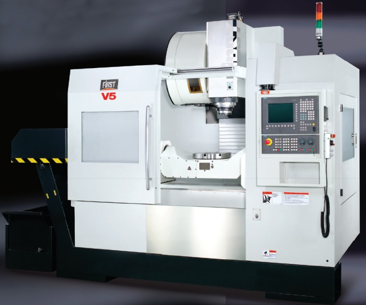

|
First 5 eksenli CNC iþleme merkezi, düþük maliyetle yüksek performans;
Long Chang firmasý (www.first.com.tw) First V-5 isimli 5 eksenli yeni Ýþleme Merkezini piyasaya çýkardý. V5 tezgahý çift yönlü dönebilen tablalý, 5 eksen simültane hareketli, maksimum verimlilik sunan, çok yönlü özellikleri olan bir tasarýmdýr.
V5 HSK-63A fenermili koniði, built-in 20.000dev/dak'lýk iþmili olarak donatýlmýþtýr. 5 Eksen dizaynýyla yüksek seri hareket hýzý ve ileri teknoloji ürünü kontrol üniteleri ile First V5 sanayicinin üretimindeki iþleme zamanýndaki kýsalmayý saðlar ve tüm beklentilerini karþýlamaktadýr. Ayný zamanda imalatçýlar, karmaþýk yapýsýna raðmen sade tasarýmýyla bu tezgahý daha rahat kullanabileceklerdir. 5 eksenli V5 tezgahý, düþük maliyetle yüksek performans yakalamayý saðlar.

Tezgah, Siemens ya da Heidenhain marka CNC kontrol üniteleri ile desteklenmiþtir.
Kullaným Alanlarý: Otomotiv parça imalatý, Uçak Sanayi, her türlü makine
parçasý imalatý, kalýp imalatý, ayakkabý taban kalýplarý...

First V-5 CNC Ýþleme Merkezi Teknik Özellikleri |
| |
|
TABLA |
|
Ýþ Tablasý Ebatlarý |
ø400 |
Tabla Yükü |
250kg |
|
|
EKSENLER |
|
X Eksen Hareketi |
700mm |
Y Eksen Hareketi |
550mm |
Z Eksen Hareketi |
500mm |
Eksen Motorlarýnýn Güçleri (X,Y,Z) |
|
Seri Hareket Hýzlarý |
24-24-20m/dak |
Kesme Hareket Hýzý |
10m/dak |
|
|
MAGAZÝN VE TAKIMLAR |
|
Takým Sayýsý |
24 |
Maksimum Takým Çapý |
Ø80mm |
Maksimum Takým Aðýrlýðý |
7kg |
Maksimum Takým Boyu |
300mm |
|
|
FENER MÝLÝ |
|
Fener Mili Koniði |
HSK-63A |
Fener Mili Devri |
20.000rpm/built in |
Fener Mili Motor Gücü |
17,5 kw |
|
|
GENEL ÖZELLÝKLER |
|
Tezgah Ýçin Gerekli Yerleþim Alaný |
3.955x2.250mm |
Aðýrlýk |
8500kg |
Siemens Kontrol Ünitesi |
|
5 Eksen Lineer Cetvel |
|
Ýrtibat:
Tezmaksan Makina San. ve Tic. A.Þ.
Abdi Ýpekçi Caddesi No:129
34150 Bayrampaþa Ýstanbul
Tel: (212) 674 60 10
www.tezmaksan.com |